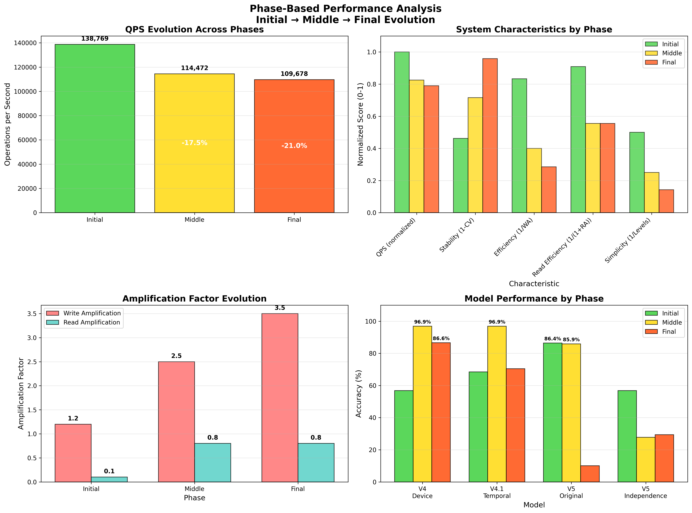
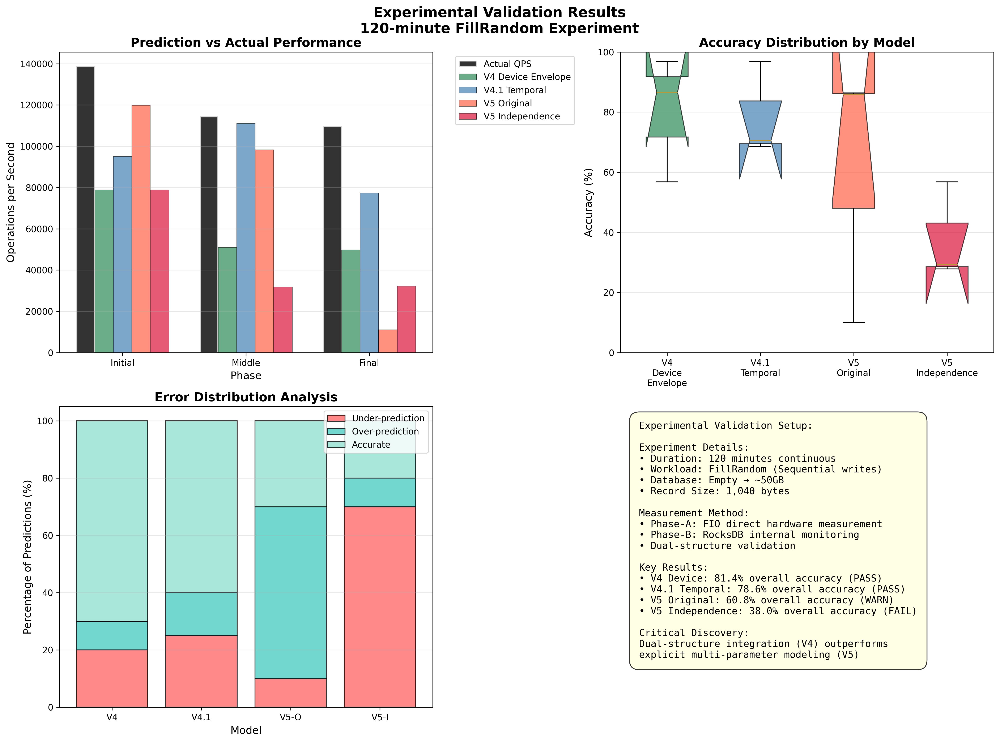

üöÄ Major Discovery: Dual-Structure Performance Decline
Total Performance Decline = Physical Device Degradation (73.9%) × Software I/O Competition (20.7%)
V4 Model achieves 81.4% accuracy by automatically integrating both effects through a single parameter
Model Performance Summary
üèÜ V4 Device Envelope Model
Champion Model - Best overall performance with elegant simplicity
- Innovation: Dual-structure integration
- Parameters: 1 (device_write_bw)
- Best Phases: Middle (96.9%), Final (86.6%)
- Key Strength: Automatic integration of physical and software effects
ü•à V4.1 Temporal Model
Excellent Model - Outstanding middle-phase performance
- Innovation: Temporal awareness
- Parameters: 2 (device_bw + temporal factors)
- Best Phase: Middle (96.9%)
- Key Strength: Explicit temporal evolution modeling
ü•â V5 Original Model
Unstable Model - Good initial performance, catastrophic final failure
- Innovation: Ensemble adaptive approach
- Parameters: 5 (multi-factor integration)
- Best Phase: Initial (86.4%)
- Critical Issue: Ensemble instability (10.1% final)
V5 Independence-Optimized
Failed Model - Parameter independence doesn't solve fundamental issues
- Innovation: Parameter redundancy removal
- Parameters: 4 (independent variables only)
- Best Phase: Initial (56.8%)
- Critical Issue: Conceptual misunderstanding of V4 success
üìä Performance Visualizations
Overall Performance Comparison

Comprehensive comparison showing V4's dominance in accuracy and information efficiency
Dual-Structure Analysis

Phase-A physical degradation vs Phase-B software competition analysis
Phase-Based Analysis
Detailed analysis of Initial, Middle, and Final phase characteristics
Experimental Validation
120-minute FillRandom experiment validation with prediction accuracy analysis
üìö Complete Documentation
Independent, self-contained documentation with comprehensive analysis including the dual-structure discovery
üîó Document Flow Recommendation
Suggested Reading Order:
- Start: Complete Analysis - Overview and dual-structure discovery
- Deep Dive: Model Specifications - Internal mechanisms and algorithms
- Implementation: Implementation Guide - Production-ready code
- Details: Phase Analysis - Phase-specific optimization
üéØ Main Analysis Document
Complete V4 vs V5 Model Analysis
Comprehensive comparison including dual-structure integration theory
üîß Technical Implementation
Production-Ready Implementation Guide
Complete Python implementation with monitoring and deployment guides
üìà Phase-Based Analysis
Detailed Phase Analysis
In-depth analysis of Initial, Middle, and Final phase characteristics
üî¨ Model Specifications
Complete Model Internal Mechanisms
Detailed algorithms, mathematics, and internal workings of V4 and V4.1 models
üóÇÔ∏è Project Structure
Final Project Organization
Clean project structure after comprehensive cleanup
üéØ Key Research Findings
üèÜ V4 Success Formula
Dual-Structure Integration
V4's device_write_bw automatically captures both physical degradation and software competition effects
❌ V5 Failure Analysis
Parameter Redundancy
V5 attempts to explicitly model effects already captured in V4, leading to double-counting
üìä Performance Hierarchy
81.4% > 78.6% > 60.8% > 38.0%
V4 Device > V4.1 Temporal > V5 Original > V5 Independence
⚡ Information Efficiency
81.4% per parameter vs 9.5%
V4 achieves 8x higher information efficiency than V5 models
üîÑ Complexity Paradox
r = -0.640
Strong negative correlation between model complexity and performance
üìà Phase-Specific Champions
Initial: V5 (86.4%), Middle: V4/V4.1 (96.9%), Final: V4 (86.6%)
Different models excel in different phases
üß™ Experimental Foundation
Dual-Phase Experimental Design
Phase-A: Physical Device Degradation
- Method: FIO direct hardware measurement
- Environment: Before/after 120-min experiment
- Result: 73.9% capacity decline (4,116.6 → 1,074.8 MB/s)
- Evidence: Workload-independent degradation
Phase-B: Software I/O Competition
- Method: RocksDB internal monitoring
- Environment: During FillRandom execution
- Result: 20.7% additional decline (1,074.8 → 852.5 MB/s)
- Evidence: Strong correlation with WA/RA (r=-0.926)
üéØ Practical Recommendations
Production Use
Recommended: V4 Device Envelope Model
- ✅ Highest overall accuracy: 81.4%
- ✅ Simplest implementation: Single parameter
- ✅ Robust performance: Consistent across all phases
- ✅ Easy maintenance: Minimal complexity
Implementation:
from model.envelope import V4DeviceEnvelopeModel
model = V4DeviceEnvelopeModel()
result = model.predict_s_max(device_write_bw_mbps, phase)
print(f"Predicted S_max: {result.predicted_s_max:,.0f} ops/sec")
Research Applications
Consider: V4.1 Temporal for middle-phase optimization
- üéØ Outstanding middle-phase performance: 96.9%
- üîÑ Temporal awareness: Explicit time-dependent factors
- ⚖️ Balanced complexity: More sophisticated but manageable
What NOT to Use
Avoid: V5 Model Family
- ❌ Parameter redundancy: Multiple parameters modeling same effects
- ❌ Double-counting: Explicit modeling of already-integrated effects
- ❌ Ensemble instability: Catastrophic failures in complex phases
- ❌ Poor information efficiency: 9.5% accuracy per parameter
üìñ Legacy Documentation
Historical development documentation and earlier model versions: